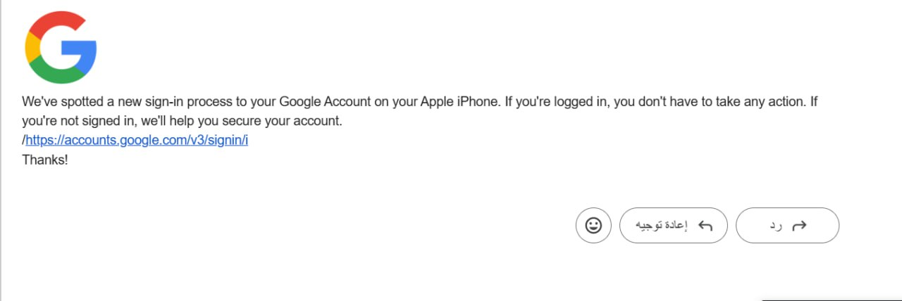
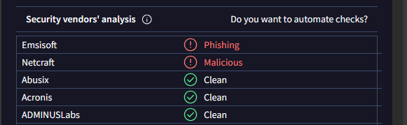

English
What are cyber attacks?
Phishing is when someone tries to trick you into giving them your personal information, like
passwords or
credit card
numbers, by pretending to be someone or something you trust, Phishing attacks first emerged in the 1990s and
have since
evolved to become more sophisticated, It counts as a cybercrime, that thousands of people are worried
about it ,It's
important to be cautious and not fall for these scams.
There are several common phishing techniques that scammers use to trick people :
1.Email Spoofing: Scammers send emails that appear to be from an accredited source, like a
bank
or a
popular
website.
2.Fake Websites: Scammers create fake websites that look identical to the real ones.
3.Smishing: This is phishing through SMS or text messages. Scammers send text messages pretending
to
be
from
a trusted
organization
4.Vishing, on the other hand, is when scammers make phone calls pretending to be from a trusted
organization....
....etc
Like we referred above,by sending these types of E-mail,SMS,websites or phone calls,
asking you for entering your personal informations for any reason,to reach your data and use them as they
want .
Remember, staying vigilant and skeptical is key when dealing with emails or messages that ask for personal
information
to stay safe.
Here's an example of a fake email:

and here's how it's done:
Safety!!
Security refers to measures taken to protect something from potential harm or unauthorized access. In
the
context of
personal information.
Types of security :
1-Physical Security
2-Cybersecurity
3-Information Security
4-social security
each of these types of security has it´s own special measures,but in here we´ll emphase on social
security
through
social media.
social security refers to the measures you can take to protect your personal information while using
social
media
platforms.
Since social media has become an important part of our lives,it´s important to know how to manage these
platforms safely
.
One of the most common problems we encounter when using these platforms is phishing.
Social security measures to secure our platforms consist of :
1. suspicious messages: If you receive a message asking for personal information or to
click
on a
link, be
skeptical.
Verify the sender's identity.
2. check URLs: Scammer often use deceptive links that may look legitimate at first glance. If
the
URL
seems
suspicious
or doesn't match the official website, avoid clicking on it.
3. Enable two-factor authentication (2FA): Many social media platforms offer 2FA as an added
layer of
security. Enable
this feature to require an additional verification step, such as a code sent to your phone, when logging
in.
4. Use strong passwords: Create strong passwords for your social media accounts and avoid
using
the
same
password
across multiple platforms.
5.Educate yourself: Stay informed about common phishing tactics and learn how to recognize
them.
By following these steps, you can enhance your social security on social media platforms and reduce the
risk
of falling
victim to phishing attempts.
VirusTotal is an example of phishing detectors:

Kurdish
هێرشا ئەلکترۆنی چیە؟
فـشـینگ ، ئـەوە ل دەمێ کـەسەک هەول ددەت کـەسەکی دسەردا ببـەت بـو دزینا زانیاریێت هەستیار و کـەسی
(تـایبەت)
و بکارئینانا
وان بشێوەکێ نەیاسای ، وەکـی ژمـارا نهێـنی یـان ژمـارا کارتا بـانکی ، ب رێـکا خـو نیشـاندان وەکـی کـەسەک
یان
تشـتەک کو
تە باوەری پێ هەبـیت ، فیشینگ ل سالێن نـوتا سەرهەلدا و تا نوکە پەرە پێ دهێتە دان ، دهـێتە هـەژمارتن ئـێک
ژ
تاوانێن
ئەلکـترونی کـو ب هزارەها خەلک ژبـەر دنالن ،یـا گرنگە یـێ هشیار بی و نەکەڤیە د ڤان جـورە فێلان دا .
ئـەو تـەکنیکێن بـاو یێت سکامەر بکاردئینن بو گەهشتن ب مەبەستا خو کو فیشینگـە؛
١، فێلکرن ب ئێمەیلی: سـکامەر رادبن ب هنارتنا هـندەک ئیمێلان ژ سەرچاوێن باوەرپێکری وەکی بانک یان
مالپەرەکێ ب
ناڤ و دەنگ
٢، مـالپـەرێت سـەختە:سکامەر رادبن ب دروست کرنا مالپەرێت ساختە کو وەکی مالپەرێن راستی دیار
دکەن
٣، سـمیشینگ: ئـەڤەژی فیشینگە ب رێکا کورتە نامەیان ، کو سکامەر رادبن ب هنارتنا کورتە نامەیەکێ
وەسا
نیشان ددەن
کو ژلایێ رێکخراوەکا باوەر پێـکریڤە هاتبیتە هنارتن
٣، ڤیشینگ: ل بەرامبەر دا مە ڤیشینگ یا هەی ئەڤەژی جورەکێ فیشینگێ یە کو سکامەر تێدا پەیوەندیێن
تێلەفونی
بکاردئینن و
وەسا خو نیشان ددەن کو ژ جهـێت باوەر پێکرینە وەکی رێکخراو ...
.......هـتد
وەکی ل سەری ئـاماژە پێ هاتیە دان ، ب هنارتنا ڤـان جورە ئیمەیل ،مالپەر ، کورتە نامەیان و
پەیوەندیێن تێلەفونی ژ تـە دهـێتە داخازکرن کـو تو زانیاریێت خـو داخل بکەی ب هەر ئەگەرەکێ هەبیت ، و ب ڤی
رەنگی سکـامەر دشـێن ب گـەهنە داتایێن تە و سەردەریێ دگەل دا بکەتن ل دیف پێدڤیا وان . بلا ل بیراتە تەبـیت
، بـون ب کەسەکێ گـوماناوی ل دەمێ سەرەدەری کرن دگـەل ئیمەیل یان کورتە نامە و هەر تشتەکێ هوسا کلیلە بو
دیربون ژڤان جورە ئـاریشان
ئێک ژ نمونا ئیمەیلێن زیانبەخش؛
و ب ڤی شێوەی هێرش د هێتە کرن؛
!!خو پاراستن
سکیورتی ⦅ئـاسایش⦆: ئـاماژەیە بو وان رێـکارێن دگرینە بەر بو پاراستنا تشتەکێ ژ زیانان یان دەست
ڤێراگەهشتنەکا
نە یاسای د
چارچوڤێ زانیاریێت کەسیدا .
هـندەک ژ جورێت سکیورتیێ :
١، سکیورتیا فیزیکی
٢، سکیورتیا ئەلکترونی
٣، سکیورتیا زانیاریا
٤، سکیورتیا کومەلایەتی
هەر ئـێک ژڤان سکیورتیان رێکارێن خویێن تایبەت هەنە، بەلێ د ڤێرەدا ئەم دێ جەختێ کەینە سەر سکیورتیا
کومەلایەتی
د سوشیال
مێدیایێ دا.
سکیورتیا کومەلایەتی : بریتیە ژ وان رێکار و رێکخستنێن هاریکاریا پاراستنا زانیاریێن کەسی دکـەن ل
دەمێ
بکارئینانا
پلاتفورمێن سوشیال میدیایێ.
لدیف هندێ کو د ڤی سەردەمی دا تا رادەکێ سوشیال میدیا یا بویە بەشەک ژ ژیانا مە یا گرنگە تێبگەهین چاوا ڤان
پلاتفورمان
بسلامەتی برێڤە ببەین.
ژوان ئاریشێن پتریا جارا ئەم توش دبین ل دەمێ بکارئیانانا ڤان پلاتفورمان فیشینگە
رێکارێن سکیورتیا کومەلایەتی بو سکیور کرنا پلاتفورمێن مە پێکدهێن ژ :
١، نامێن گوماناوی :ئـەگەر نامەک بوتە هات تێدا داخازا زانیاریێن کەسی ژتە هاتە کرن یان کلیکێ لسەر
لینکەکێ
بکەی
، بلا بوتە
گومان چێببن، ژ وی کەسی پشت راست بە یێ بوتە هنارتی.
٢، پشکنینا یو ئار ئێڵان:
پتریا جارا سکامەر لینکێت سەختە بکاردئینن بو دسەردا برنا تە, وەکی دبەری نوکە دا
بەحس لێ
هاتیە کرن، د
ئێکەم دیتن دا وەکی یێن راستی دیار دکەن ، ئەگەر هات و ئەو یو ئار ئێڵ گوماناوی دەرکەفت یان دگەل مالپەرێ
فەرمیدا
نەگونجیت ، خو
دیربکە ژ کلیکرنێ لسەر
:Enabletwo-factorauthenticatin ٣، چالاکرنا
پتریا پلاتفورمێن سوشیال میدیایێ وەکی چینەکا زێدە بو سکیورتیێ پێش کێش دکەن ،ڤێ تایبەتمەندیێ چالاک بکە
داکو پێدڤی ب
پێنگاڤەکا پشت راستکرنێ هەبیت وەکی کودەکی کو بوتە بێتە فرێکرن ل دەمێ داخل بون بو ناف ئەکاونتان دا
٤، بکارئینانا ژمارێت نهێنیێن بهێز :
ژمارێن نهێنی یێت بهێز بکاربینە و دیرکەڤە ژ دووبارە بکارئینانا هەمان ژمارا نهێنی بو چەند پلاتفورمان
٥، زانیاریێن خو زێدە بکە :
٥، زانیاریێن خو زێدە بکە : بلا تە زانیاری هەبن دەربارەی تکنیکێن باو یێن فیشینگێ و گرنگیێ پێبدە
فێرببە چاوا
دێ
وان نیاسی
ب ئـەنجام دانا ڤان پێنگاڤان ، دشێی سکیورتیا پلاتفورمێن خو بلند بکەی ، و مەترسیا فیشینگێ کێم بکەی
ئێک ژ نمونایە بو پشکنین کرنا وێبسایتێن زیانبەخش؛ VirusTotal
Arabic
ماهو الهجوم إلكتروني
التصيد الاحتيالي
هو عندما يحاول شخص ما خداعك لمنحه معلوماتك الشخصية، مثل كلمات المرور أو أرقام بطاقات الائتمان، من خلال
التظاهر بأنك شخص أو شيء تثق به، ظهرت هجمات التصيد الاحتيالي لأول مرة في التسعينيات وتطورت منذ ذلك الحين
لتصبح أكثر
تعقيدًا، وهي مهمة باعتبارها جريمة إلكترونية، يشعر الآف من الأشخاص بالقلق بشأنها، ومن المهم توخي الحذر وعدم
الوقوع في
فخ عمليات الاحتيال هذه.
هناك العديد من تقنيات التصيد الاحتيالي الشائعة التي يستخدمها المحتالون لخداع الأشخاص:
١- انتحال البريد الإلكتروني: يرسل المحتالون رسائل بريد إلكتروني تبدو وكأنها من مصدر معتمد، مثل بنك أو
موقع ويب مشهور.
٢- المواقع المزيفة: يقوم المحتالون بإنشاء مواقع ويب مزيفة تبدو مطابقة للمواقع الحقيقية.
٣-سمشنک: هذا هو التصيد الاحتيالي من خلال الرسائل النصية القصيرة أو الرسائل النصية. يرسل المحتالون
رسائل نصية
تتظاهر
بأنها من مؤسسة موثوقة
٤-من ناحية أخرى، يحدث التصيد الاحتيالي عندما يجري المحتالون مكالمات هاتفية متظاهرين بأنهم من مؤسسة
موثوقة....
....إلخ
كما أشرنا أعلاه، عن طريق إرسال هذه الأنواع من البريد الإلكتروني، والرسائل النصية القصيرة، ومواقع الويب،
والمكالمات
الهاتفية، يطلبون منك إدخال معلوماتك الشخصية لأي سبب للوصول إلى بياناتك واستخدامها كما يريدون.
تذكر أن البقاء يقظًا ومتشككًا هو أمر أساسي عند التعامل مع رسائل البريد الإلكتروني أو الرسائل التي تطلب
معلومات شخصية
للبقاء آمنًا.
هذا واحد من الرسائل البرید الالکتروني المزیفة؛
و هذا کیفیة القیام بذالک؛
!!احمي نفسك
يشير الأمن إلى التدابير المتخذة لحماية شيء ما من الضرر المحتمل أو الوصول غير المصرح به. في سياق المعلومات
الشخصية
أنواع الأمن:
١-
الأمن الجسدي
٢-الأمن السيبراني
٣-أمن المعلومات
٤-الضمان الاجتماعي
ولكل نوع من هذه الأنواع من الأمان إجراءاته الخاصة، ولكن هنا سنركز على الضمان الاجتماعي من خلال وسائل التواصل
الاجتماعي.
يشير الضمان الاجتماعي إلى التدابير التي يمكنك اتخاذها لحماية معلوماتك الشخصية أثناء استخدام منصات التواصل
الاجتماعي.
نظرًا لأن وسائل التواصل الاجتماعي أصبحت جزءًا مهمًا من حياتنا، فمن المهم معرفة كيفية إدارة هذه المنصات
بأمان.
إحدى المشكلات الأكثر شيوعًا التي نواجهها عند استخدام هذه الأنظمة الأساسية هي التصيد الاحتيالي.
تتكون إجراءات الضمان الاجتماعي لتأمين منصاتنا من:
١-
الرسائل المشبوهة؛
إذا تلقيت رسالة تطلب معلومات شخصية أو للنقر على رابط، فكن متشككًا التحقق من هوية
المرسل
٢- التحقق من عناوين یو ار ایل: غالبًا ما يستخدم المحتال روابط خادعة قد تبدو مشروعة للوهلة الأولى. إذا
كان
عنوان
یو ار ایل يبدو
مريبًا أو لا يتطابق مع الموقع الرسمي، فتجنب النقر عليه.
تمكين المصادقة الثنائية : تقدم العديد من منصات الوسائط الاجتماعية المصادقة الثنائية كطبقة إضافية من
الأمان. (2FA)
٣- قم
بتمكين هذه الميزة للمطالبة بخطوة تحقق إضافية،
مثل الرمز الذي يتم إرساله إلى هاتفك، عند تسجيل الدخول.
٤-استخدم كلمات مرور قوية: قم بإنشاء كلمات مرور قوية لحسابات الوسائط الاجتماعية الخاصة بك وتجنب
استخدام نفس
كلمة المرور
عبر منصات متعددة.
٥-ثقف نفسك: ابق على اطلاع بأساليب التصيد الاحتيالي الشائعة وتعلم كيفية التعرف عليها.
باتباع هذه الخطوات، يمكنك تعزيز أمانك الاجتماعي على منصات التواصل الاجتماعي وتقليل خطر الوقوع ضحية لمحاولات
التصيد
الاحتيالي.
هي مثال علی اجهزة کشف التصید الاحتيالي؛ VirusTotal